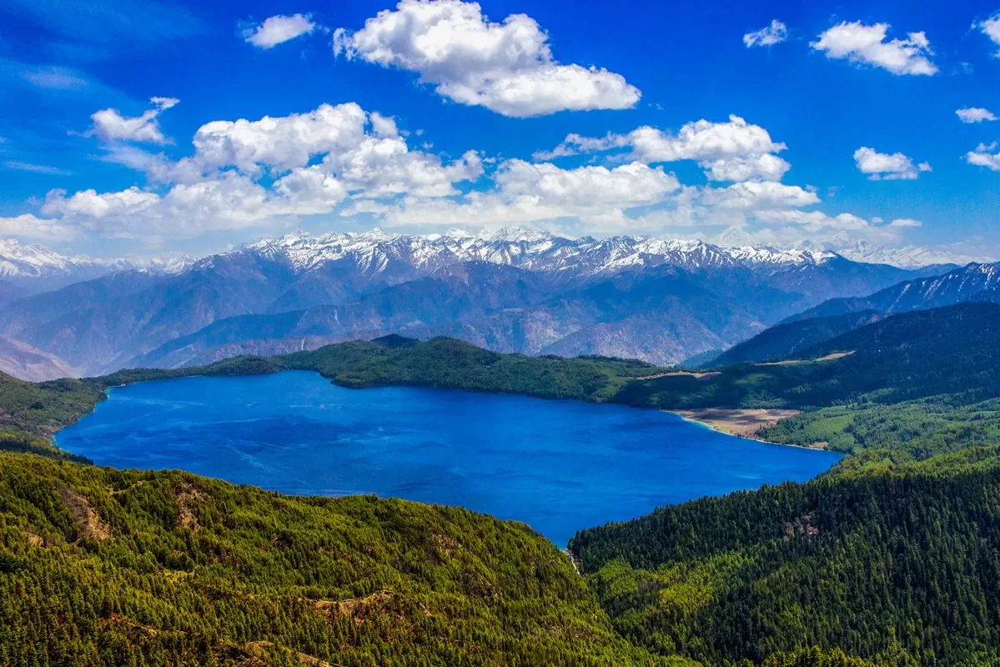
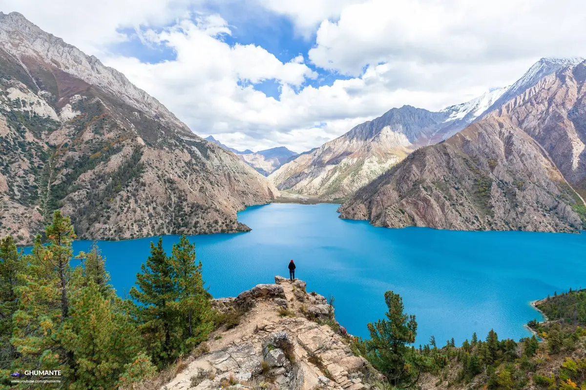
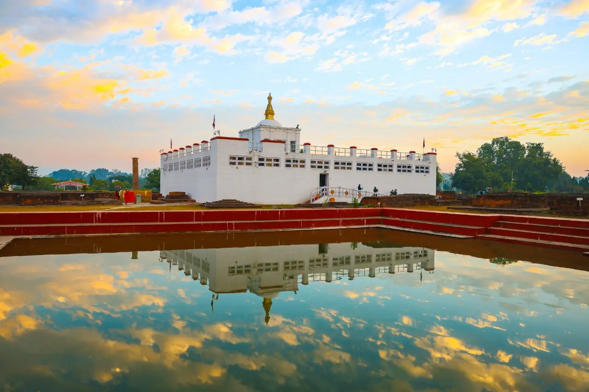
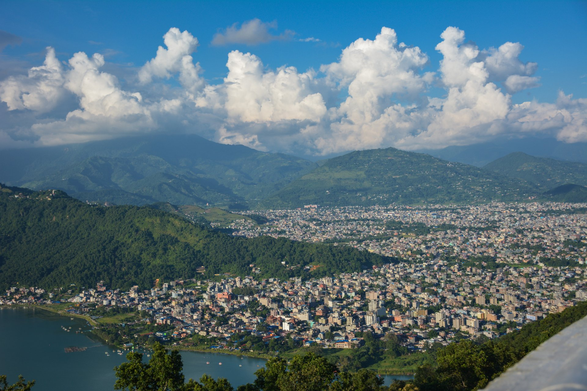
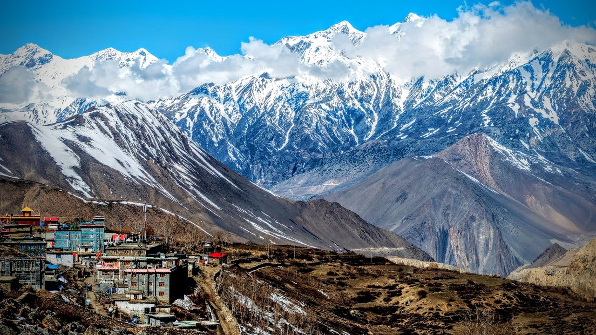
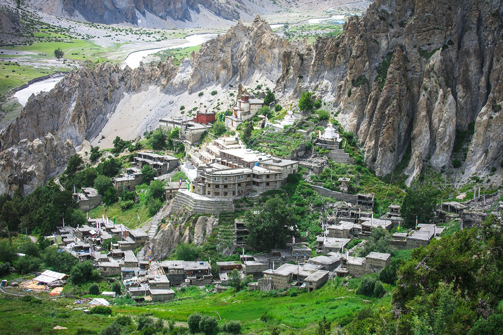
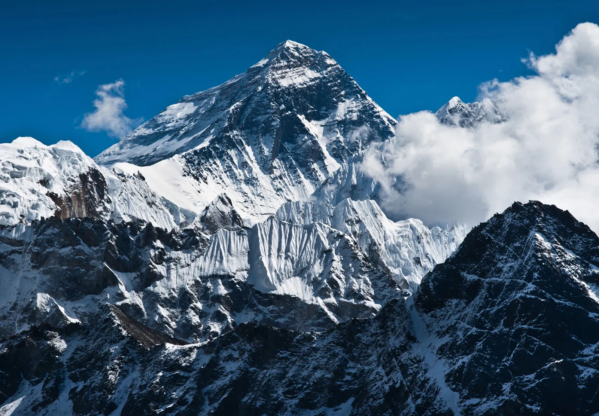
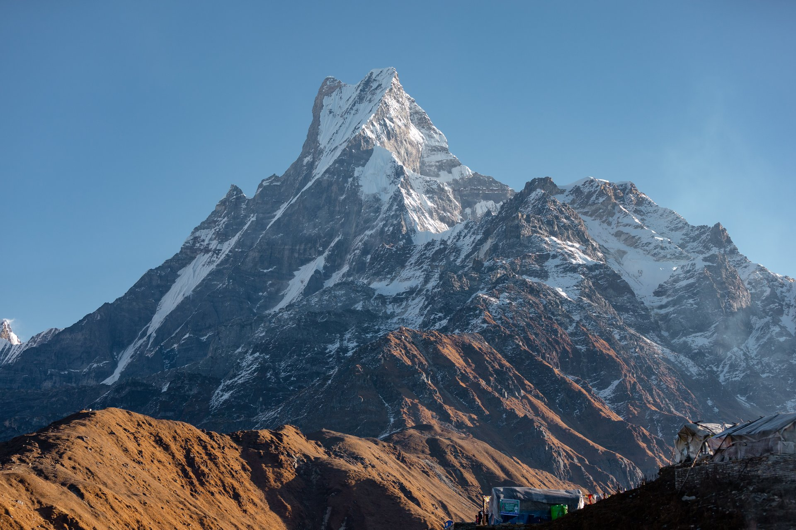
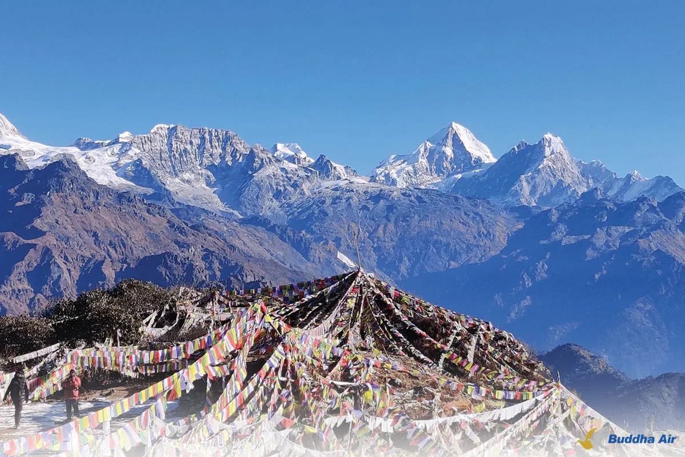

Explore the pristine beauty of Nepal's most breathtaking locations

Nepal's largest and most beautiful lake, set in the remote wilderness of Mugu district. Crystal clear blue waters surrounded by pristine pine forests and snow-capped peaks.

The deepest glacial lake in Nepal, located in the Dolpa district. Its turquoise waters reflect the surrounding Himalayan peaks, creating a mesmerizing panorama.

The birthplace of Lord Buddha and a UNESCO World Heritage Site. Explore ancient temples, sacred gardens, and the Maya Devi Temple.

The gateway to the Annapurna Circuit. Experience stunning lakes, waterfalls, caves, and the magnificent Machhapuchhre (Fish Tail) mountain.

The forbidden kingdom awaits with its ancient Tibetan culture, cave systems, and dramatic desert-like landscapes bordered by the Himalayas.

A picturesque village in the Annapurna region, offering spectacular views of Gangapurna and Tilicho Peak. Perfect base for high-altitude trekking.

The iconic trekking destination at 5,364m. Stand where legendary mountaineers begin their ascent to the roof of the world.

Known as the Sanctuary, ABC trek offers a 360-degree view of the Annapurna massif. Experience the beauty of the Himalayas up close.

The highest vehicle-accessible point in the Kavrepalanchowk district. Offers panoramic views of the Himalayas and sacred pilgrimage site.